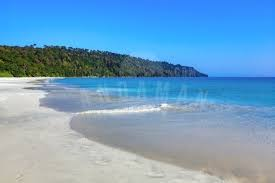

The Andaman Islands are an Indian archipelago in the Bay of Bengal. These roughly 300 islands are known for their palm-lined, white-sand beaches, mangroves and tropical rainforests. Coral reefs supporting marine life such as sharks and rays make for popular diving and snorkeling sites. Indigenous Andaman Islanders inhabit the more remote islands, many of which are off limits to visitors.
| Top things to do in Andaman and Nicobar islands | |
|---|---|
|  | |
| Radhanagar Beach | Swaraj Deep |
Tucked in Havelock Island, Radhanagar Beach is regarded as the best beach in India.Radhanagar Beach is one of the many highlights, not only in Havelock but also in the Andaman Islands.